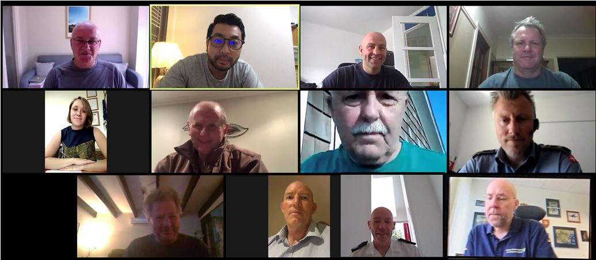

The INSARAG Training Working Group (TWG) was established with a mandate to focus on the development of training standards and content for the INSARAG community. The TWG takes its direction from the INSARAG Secretariat which, in turn, follows direction given by the INSARAG Steering Committee. The group meets two to three times a year. The reports of this working group's meetings can be found below.
Chair of TWG, Mr. Dewey Perks
| Name | Country | Position | |
| Dewey Perks | USA | Chair | dperks@usaid.gov |
| Joshua Turner | Australia | Member | joshua.turner@fire.nsw.gov.au |
| David Sochor | Switzerland | Member/GRG | david.sochor@eda.admin.ch |
| Kira Chebakova | Russia Fed. | Member | kira_chebakova@mail.ru |
| Paul Lawless | United Kingdom | Member | PLawless@fireresillience.org.uk |
| Jacob Bolwinkel | Denmark | Member | brs-jeb@brs.dk |
| Tsukasa Katsube | Japan | Member | Katsube.tsukasa.3@jica.go.jp |
| Peter Goxharaj | Germany | Member | peter.goxharaj@thw.de |
Following on from the previous online meeting which was held in July, the INSARAG TWG, with representatives of the IMWG, MWG and TL Reps held a further video conference on 12th August. The meeting discussed a variety of current INSARAG matters, ranging from the current IEC/R system review to the recent USAR deployments to the Beirut Explosion. The members also reviewed TWG workstreams, organisation of meetings and the distribution of work packages in order to better fit the challenges we are all facing during the COVID-19 pandemic.

TWG Meeting 8 July 2020
TWG Meeting Santiago de Chile October 2019
TWG Meeting Muscat June 2019
The meeting was hosted by the Sultanate of Oman, Royal Oman Police (ROP), Public Authority for Civil Defense and Ambulance (PACDA), in Muscat, Oman. The meeting would not have been possible without the excellent support and generous hospitality of PACDA.
TWG Meeting Notes Muscat June 2019 Final Note
Working Group Meeting, Germany, December 2018
The INSARAG Training Working Group, including representatives from the Team Leaders and Information Management Working Group, met in Berlin from the 10th to the 13th of December. The Group were hosted by Albrecht Broemme, President of THW, at the Regional THW Office in Berlin, and key agenda items for the meeting included; The development of the INSARAG Classification Team Leaders and Mentors Training Course, The continued development of USAR Coordination Course and harmonisation with OSOCC methodology, and Revision of INSARAG Guidelines Volume II, Manual C.
TWG Meeting Notes Berlin 18 Final Draft
Meeting during Team Leader Meeting, September 2018
TWG: Continues working with other WGs on guideline revisions, a new IEC/IER checklist, and a reformatted TL/Mentor course.
Working Group Meeting, Denmark, April 2018
INSARAG Training Working Group (TWG) met in Tinglev, Denmark in the DEMA Emergency Services College from 15 to 18 April 2018
FIRST MEETING, MARCH 2014 in ABU DHABI, UAE
SECOND MEETING, SEPTEMBER 2014 in QATAR
Member
FIRST MEETING, MARCH 2013 IN LUZERN, SWITZERLAND
SECOND MEETING, JUNE 2013 IN BERN, SWITZERLAND
THIRD MEETING, SEPTEMBER 2013 IN THE HAGUE, NETHERLANDS
FIRST MEETING,17-25 MARCH 2012 IN BRISBANE, AUSTRALIA
INSARAG Website
INSARAG Document Management Procedure
Guidelines Division ISG and OPS
INSARAG Governance PP v0.1
INSARAG OPS Trng Performance & Equip Standard April 2012_V2
INSARAG Advisory Organisation Advisory Process v1.0
Outcomes from TLs Governance Workshop V1.0
USAR Team Description TL Meeting Australia 2012 v2
SECOND MEETING, 4-10 NOVEMBER 2012, LOS ANGELES, USA
The meeting was hosted by the LA County USAR Section (USA 2) and was
conducted in Los Angeles, USA, from the 4th – 10th November 2012. Please find attached the Chairman Summary .
FIRST MEETING, 30 MARCH-03 APRIL 2011, COSTA RICA
The first meeting of the INSARAG TWG in 2011 took place from 30 March–03 April 2011 in Costa Rica back to back with the INSARAG Team Leaders Meeting. Below is the Chairman Summary of this meeting. Please note that the outcomes of this working group are not official INSARAG documents until they are endorsed by the INSARAG Steering Group.
Chairman Summary
SECOND MEETING, 9-15 OCTOBER 2011, UAE
The second and last meeting of the INSARAG TWG in 2011 took place from 9-15 October 2011 in UAE.
FIRST MEETING, 25-29 JANUARY 2010, SINGAPORE
The first meeting of the INSARAG TWG in 2010 took place from 25-29 January 2010 in Singapore. Below is the Executive Summary and outcomes of this meeting. Please note that the outcomes of this working group are not official INSARAG documents until they are endorsed by the INSARAG Steering Group.
Agenda and Executive Summary
Establishing National USAR Capacity
Minimum Operational Levels for Light USAR Teams
Minimum Operational Levels for Medium and Heavy USAR Teams
SECOND MEETING, 13-17 DECEMBER 2010, GERMANY
The second and last meeting of the INSARAG TWG in 2010 took place from 13-17 December 2010 in Germany. Below is the Chairman Summary and outcomes of this meeting. Please note that the outcomes of this working group are not official INSARAG documents until they are endorsed by the INSARAG Steering Group